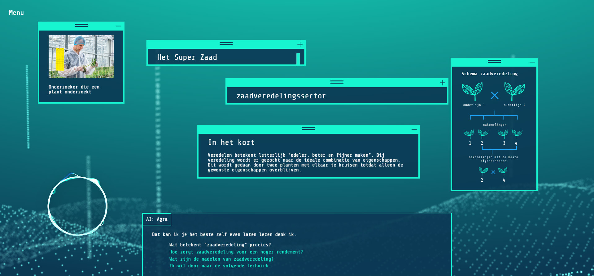
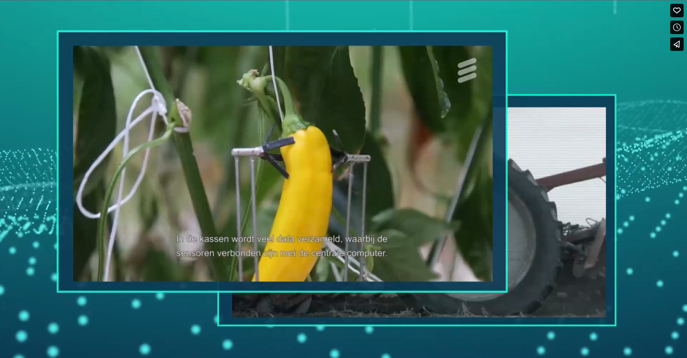

Hello I'm AGRA
An AI created by the WFP to provide you with advice regarding the Global Food Crisis.

Home screen AGRA.
Amidst the challenge of feeding a burgeoning global population, over hundreds of millions grapple with hunger daily. Arable land is dwindling, and by 2050, our planet will be home to 9.7 billion people, predominantly in Asia and Africa. Doubling our food production is imperative. The Netherlands, known for innovation, might hold the key. Join the quest to find solutions and ensure a future where everyone has enough to eat!
AGRA is a multimedia story presented on a website, cleverly disguised as an AI chatbot. Users can engage in conversations with AGRA and choose between questions and responses to interact. The interactions are customizable, allowing users to decide how the conversation unfolds. Occasionally, AGRA may respond with a touch of sass. Feel free to skip parts of the story that don't interest you or go back to explore deeper depths. The entire experience will take anywhere from 5 to 20 minutes, and we leave that timeframe up to you.
Chat with AGRA yourself! Enter the chat.
This project was commissioned by the CBS (Centraal Bureau voor de Statistiek) with the objective of co-creating a storytelling-related initiative, combined with infographics, to tackle important topics. The goal of this project is to improve users' understanding of what distinguishes the Netherlands in the field of agriculture.
Informative modals generated by AGRA.
With the assistance of CBS, we embarked on a storytelling mission to explore narratives related to the impending global hunger crisis. Working in a team of four, we addressed the question: "How can the Netherlands contribute to preventing the upcoming global hunger crisis?"
Disclaimer: While this project is commissioned by the CBS, they do not directly associate themselves with the message conveyed in this project.
Video generated by AGRA.
After conducting extensive research on the topic we were passionate about, we successfully narrowed down all our ideas to a single concept. AGRA was born, an AI chatbot created by the World Food Programme (WFP) to address the current food crisis
With AGRA, you can explore various topics at your own pace, all related to the global food crisis, such as plant breeding, precision farming, and other innovative techniques in the agricultural sector. You have the freedom to decide how deeply you want to delve into each topic, through informative videos and modals. Form your own opinions and expand your horizon. Perhaps you will discover the key to resolving this impending crisis we are facing.